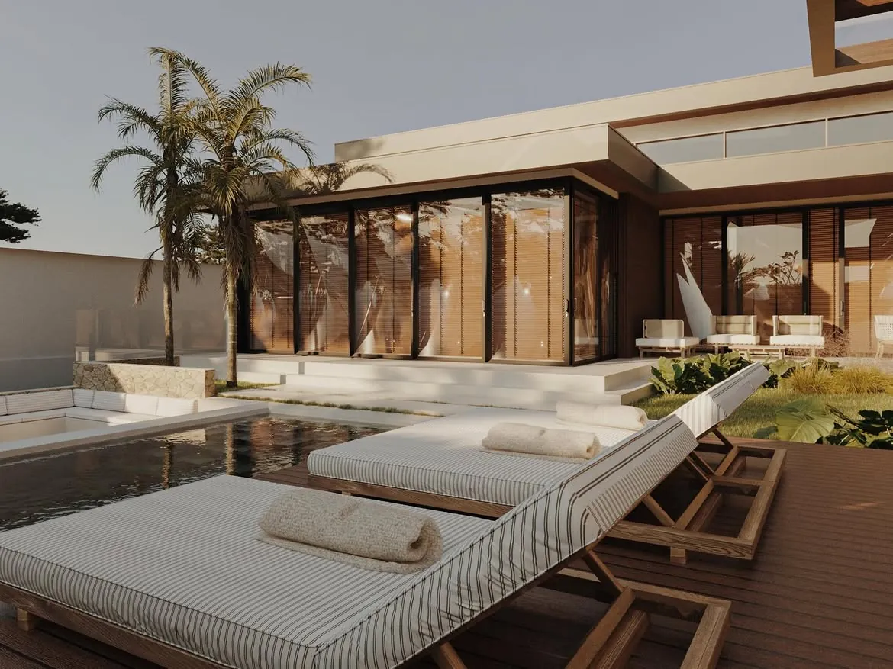
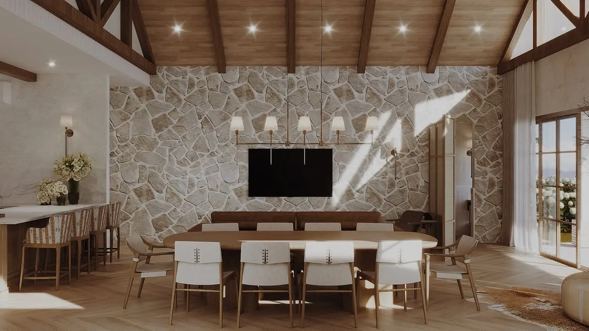
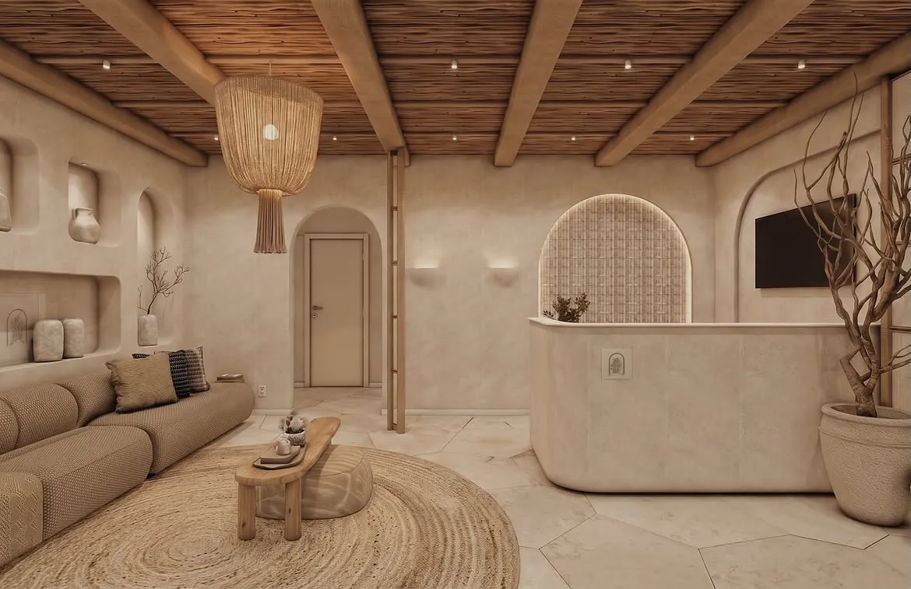
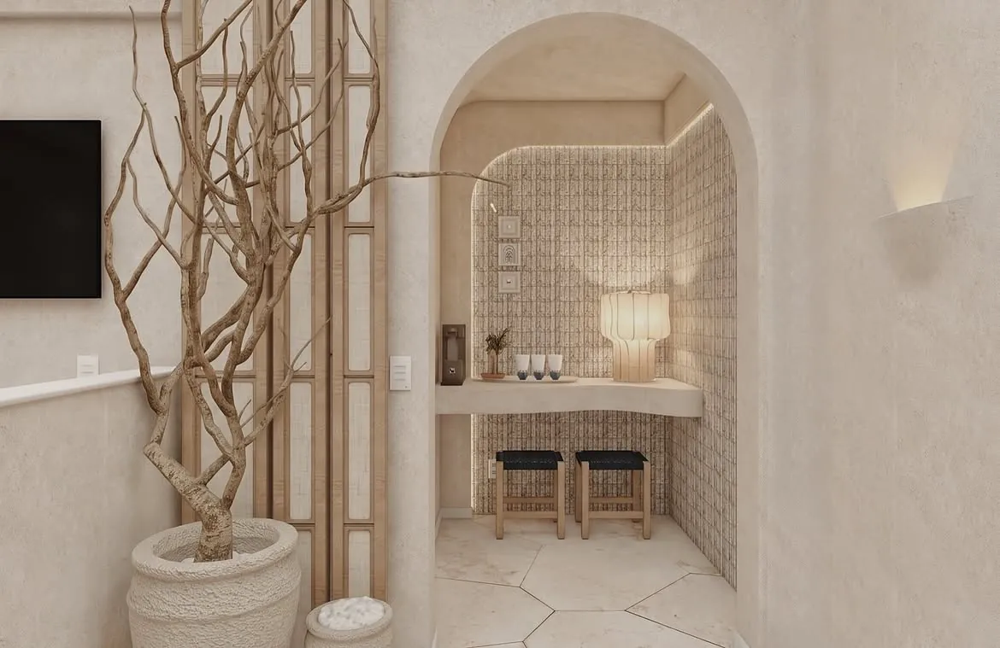
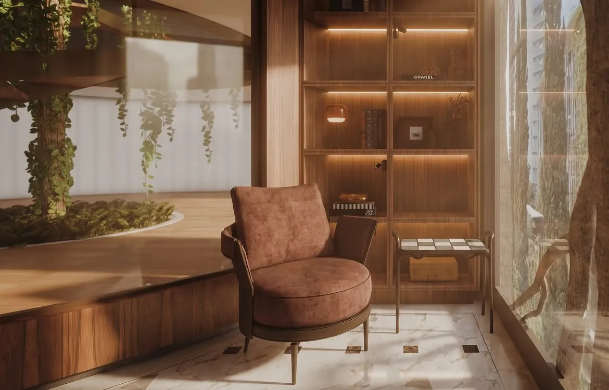

O que nos representa
A onça que nos representa, a paleta de terras queimadas, a mistura de estampas que parece improvável até virar harmonia, a marcenaria fluida, os detalhes que só se revelam no segundo olhar.


Cada projeto nasce da escuta. Materiais quentes, estampas que conversam entre si e uma marcenaria que parece ter sido sempre parte do lugar.


Todo projeto começacom uma boa conversa.
Conte o que você imagina para a sua casa, o seu apartamento ou o seu espaço de trabalho. A equipe responde e marca um primeiro encontro.
Falar com a equipe

A arquiteta
IsadoraFigueiredo
Ela desenha espaços que acolhem antes de impressionar, e acredita que a elegância está na forma como um lugar faz a gente se sentir.
À frente do escritório em Maringá, Isadora assina projetos de arquitetura e interiores em diferentes cidades do Brasil e também fora dele. Entre eles está o Rosewood São Paulo, onde desenhou recepção, circulação e salas de atendimento com o mesmo cuidado que dedica a uma casa.
O processo é próximo. Ela acompanha cada cliente do primeiro encontro à entrega, e é dessa proximidade que nascem os detalhes que ninguém esquece.
Conhecer a arquiteta e a equipeO escritório
Um estúdioem Maringá,com projetospelo mundo.
Na Rua Luiz Gama, a equipe acompanha cada obra de perto. Do desenho da fachada ao último puxador da marcenaria, tudo passa pelas mesmas mãos.

Contato
Depoimentos
Quem já viveu o projeto
A Isadora entendeu o que a gente queria antes mesmo de conseguirmos explicar. A casa ficou com a nossa cara, cheia de detalhes que vamos descobrindo aos poucos.
Eu queria um apartamento sem medo de cor e de estampa. O resultado ficou exatamente assim, ousado e acolhedor ao mesmo tempo.
Quem chega sempre comenta como o espaço é acolhedor. Não parece um consultório, parece um lugar onde a gente quer ficar.
Mesmo com a distância, o acompanhamento foi próximo do começo ao fim. Cada decisão foi explicada com calma e muito cuidado.